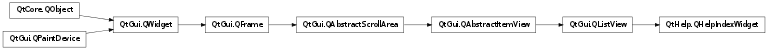

QHelpIndexWidget ¶

Detailed Description ¶
The PySide.QtHelp.QHelpIndexWidget class provides a list view displaying the PySide.QtHelp.QHelpIndexModel .
- PySide.QtHelp.QHelpIndexWidget. activateCurrentItem ( ) ¶
-
Activates the current item which will result eventually in the emitting of a PySide.QtHelp.QHelpIndexWidget.linkActivated() or PySide.QtHelp.QHelpIndexWidget.linksActivated() signal.
- PySide.QtHelp.QHelpIndexWidget. filterIndices ( filter [ , wildcard="" ] ) ¶
-
Parameters: - filter – unicode
- wildcard – unicode
Filters the indices according to filter or wildcard . The item with the best match is set as current item.
See also
- PySide.QtHelp.QHelpIndexWidget. linkActivated ( link , keyword ) ¶
-
Parameters: - link – PySide.QtCore.QUrl
- keyword – unicode
- PySide.QtHelp.QHelpIndexWidget. linksActivated ( links , keyword ) ¶
-
Parameters: - links –
- keyword – unicode
- PySide.QtHelp.QHelpIndexWidget. showLink ( index ) ¶
-
Parameters: index – PySide.QtCore.QModelIndex